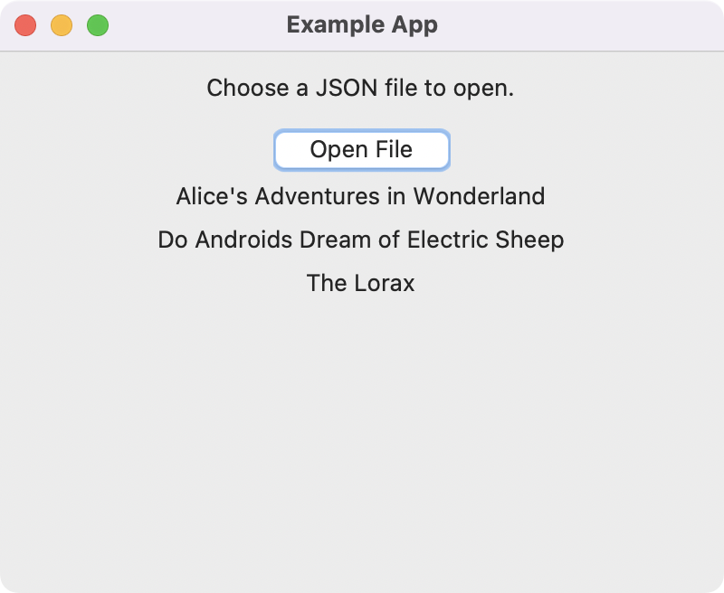

Open JSON file
November 8, 2022
Example of opening a JSON file and reading its contents in a Tkinter app. See the Python Tkinter docs for more information about file selection dialogs.
import json
import tkinter as tk
from tkinter import ttk
from tkinter import filedialog
class MyApp:
def __init__(self, root):
self.root = root
self.configure_window()
self.create_widgets()
def configure_window(self):
self.root.title('Example App')
self.root.geometry('400x300')
self.root.resizable(True, False)
def create_widgets(self):
ttk.Label(text='Choose a JSON file to open.').pack(pady=10)
ttk.Button(text='Open File', command=self.open_file).pack()
def open_file(self):
filetypes = (('JSON files', '*.json'),)
filename = filedialog.askopenfilename(filetypes=filetypes)
with open(filename) as json_file:
data = json.load(json_file)
for d in data:
ttk.Label(text=f"{d['title']}").pack(pady=2)
if __name__ == '__main__':
root = tk.Tk()
MyApp(root)
root.mainloop()
Use the Open File button to display a file selection dialog. Then select the books.json file from the examples folder in this GitHub repository.

The contents of the JSON file is loaded and displayed as text labels in the window.

🐍 Pythonic Programming
by Gavin Wiggins © 2022